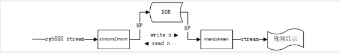
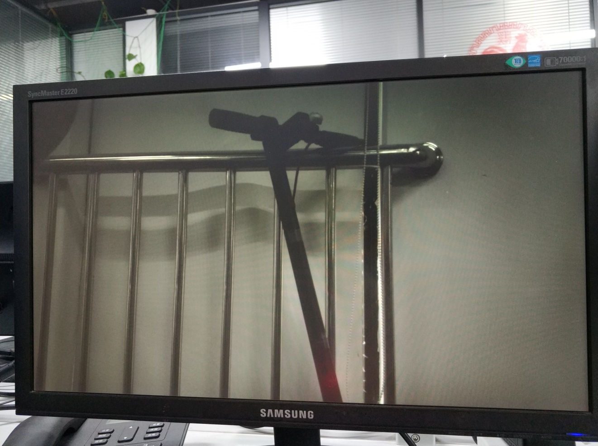

视频帧缓存读写管理#
实验介绍#
首先,将镜头的图像(转换为RGB888)存储至DDR,然后通过读取DDR来显示视频图像。这里需要解决图像刷新速率不一致时,可能造成的图像割裂状问题。 这里共设计了二个HLS模块：stream2mem模块,mem2stream模块,流程图如下。

这里需要解决的一个问题是,若写DDR与读DDR速度不匹配,则会造成图像显示时裂开的现像。解决的方法是：DDR使用三帧缓存,HLS读模块与写模块分别向对方反馈帧索引号。
模块主要代码#
mem2stream 部分
#include "mem2stream.h"
unsigned int cache_len=0;
void readmem(unsigned int *pMemPort, unsigned int base, int row, int rows, unsigned int *to, int line_len)
{
if(cache_len < (2*line_len))
{
if((row+1) == rows)
{
memcpy(to, pMemPort+base, (2*line_len-cache_len)*4);
}
else
{
memcpy(to, pMemPort+base+(row+1)*line_len, (2*line_len-cache_len)*4);
}
cache_len = line_len;
}
else
{
cache_len -= line_len;
}
}
template<int ROWS, int COLS>
void mem2mat(xf::cv::Mat<XF_8UC3,ROWS,COLS,XF_NPPC1> &img, unsigned int *pMemPort,int baseAddr[3],int w, int &r)
{
XF_TNAME(XF_8UC3,XF_NPPC1) pixel;
unsigned int cacheBuff[COLS];
int local_rows = img.rows;
int local_cols = img.cols;
int line_len = img.cols*3/4;
static int index=2;
int n = (index<2)?(index+1):0;
index = (n == w)?index:n;
r = index;
#pragma HLS STREAM variable=cacheBuff depth=COLS*2
for(int row=0; row<local_rows; row++)
{
#pragma HLS loop_tripcount min=12 max=1080
#pragma HLS dataflow
readmem(pMemPort, baseAddr[index]>>2, row, local_rows, cacheBuff, line_len);
for(int col=0; col<local_cols; col+=4)
{
#pragma HLS loop_tripcount min=3 max=480
pixel.range(7,0) = cacheBuff[0]>>0;
pixel.range(15,8) = cacheBuff[0]>>8;
pixel.range(23,16) = cacheBuff[0]>>16;
img.write(row*local_cols+col,pixel);
pixel.range(7,0) = cacheBuff[0]>>24;
pixel.range(15,8) = cacheBuff[1]>>0;
pixel.range(23,16) = cacheBuff[1]>>8;
img.write(row*local_cols+col+1,pixel);
pixel.range(7,0) = cacheBuff[1]>>16;
pixel.range(15,8) = cacheBuff[1]>>24;
pixel.range(23,16) = cacheBuff[2]>>0;
img.write(row*local_cols+col+2,pixel);
pixel.range(7,0) = cacheBuff[2]>>8;
pixel.range(15,8) = cacheBuff[2]>>16;
pixel.range(23,16) = cacheBuff[2]>>24;
img.write(row*local_cols+col+3,pixel);
}
}
}
void mem2stream(vstream_t &vstream, unsigned int *pMemPort, int rows, int cols,int baseAddr[3],int indexw, int &indexr)
{
#pragma HLS INTERFACE mode=s_axilite port=baseAddr
#pragma HLS INTERFACE axis port=vstream
#pragma HLS INTERFACE m_axi port=pMemPort
#pragma HLS INTERFACE s_axilite port=rows
#pragma HLS INTERFACE s_axilite port=cols
#pragma HLS INTERFACE s_axilite port=return
#pragma HLS INTERFACE ap_none port=indexw
#pragma HLS INTERFACE ap_none port=indexr
xf::cv::Mat<XF_8UC3,IMG_MAX_ROWS,IMG_MAX_COLS,XF_NPPC1> img;
#pragma HLS STREAM depth=1080 type=fifo variable=img
#pragma HLS dataflow
mem2mat<IMG_MAX_ROWS,IMG_MAX_COLS>(img, pMemPort,baseAddr,indexw,indexr);
xf::cv::xfMat2AXIvideo(img, vstream);
}
stream2mem 部分
#include "stream2mem.h"
void writemem(unsigned int *pMemPort, unsigned int to, unsigned int *from, int len)
{
if(len > 0)
{
memcpy(pMemPort+to, from, len);
}
}
template<int ROWS, int COLS>
void mat2mem(xf::cv::Mat<XF_8UC3,ROWS,COLS,XF_NPPC1> &img, unsigned int *pMemPort,int baseAddr[3],int &w, int r)
{
XF_TNAME(XF_8UC3,XF_NPPC1) pixelA, pixelB, pixelC, pixelD;
unsigned int cacheBuff[COLS*3/4];
int local_rows = img.rows;
int local_cols = img.cols;
int line_len = img.cols*3/4;
static int index=0;
int n = (index<2)?(index+1):0;
index = (n == r)?index:n;
w = index;
#pragma HLS STREAM variable=cacheBuff depth=COLS/4
for(int row=0; row<local_rows; row++)
{
#pragma HLS loop_tripcount min=12 max=1080
#pragma HLS dataflow
for(int col=0; col<local_cols; col+=4)
{
#pragma HLS loop_tripcount min=3 max=480
pixelA = img.read(row*local_cols+col);
pixelB = img.read(row*local_cols+col+1);
cacheBuff[0] = (pixelA.range(7,0)<<0)|(pixelA.range(15,8)<<8)|(pixelA.range(23,16)<<16)|(pixelB.range(7,0)<<24);
pixelC = img.read(row*local_cols+col+2);
cacheBuff[1] = (pixelB.range(15,8)<<0)|(pixelB.range(23,16)<<8)|(pixelC.range(7,0)<<16)|(pixelC.range(15,8)<<24);
pixelD = img.read(row*local_cols+col+3);
cacheBuff[2] = (pixelC.range(23,16)<<0)|(pixelD.range(7,0)<<8)|(pixelD.range(15,8)<<16)|(pixelD.range(23,16)<<24);
}
writemem(pMemPort, (baseAddr[index]>>2)+(row*line_len), cacheBuff, line_len*4);
}
}
void stream2mem(vstream_t &vstream, unsigned int *pMemPort, int rows, int cols, int baseAddr[3],int &indexw, int indexr)
{
#pragma HLS INTERFACE mode=s_axilite port=baseAddr
#pragma HLS INTERFACE axis port=vstream
#pragma HLS INTERFACE m_axi port=pMemPort
#pragma HLS INTERFACE s_axilite port=rows
#pragma HLS INTERFACE s_axilite port=cols
#pragma HLS INTERFACE ap_ctrl_none port=return
#pragma HLS INTERFACE ap_none port=indexw
#pragma HLS INTERFACE ap_none port=indexr
xf::cv::Mat<XF_8UC3,IMG_MAX_ROWS,IMG_MAX_COLS,XF_NPPC1> img;
#pragma HLS STREAM depth=1920 type=pipo variable=img
#pragma HLS dataflow
xf::cv::AXIvideo2xfMat(vstream, img);
mat2mem(img, pMemPort,baseAddr,indexw, indexr);
}
在这里,我们将数组cacheBuff定义为流类型,方便我们排流水。另外,baseAddr为全局变量,但我们仍然可以将其定义为模块的外部接口,而不必是top函数的参数。 内存读取与写入时,调用系统函数memcpy。若直接引用单个数组成员,将严重浪费DDR带宽,不推荐。
工程路径#
名称 |
路径 |
|---|---|
vivado 工程 |
vivado/video_show |
HLS工程 |
hls/mem2stream |
HLS工程 |
hls/stream2mem |
BOOT.bin文件 |
bootimage |
实验结果#
显示双目视频中的一个视频图像。当视频中出现快速移动物体时,不会有割裂状。当前视频在几个分辨率之间不断切换。低分辨率时,仅能显示部分图像。

需要注意,显示输出分辨率在不断变化,所以画面会隔一段时间黑掉,属于正常现象。

AX7020硬件连接图（J16扩展口）
ZYNQ 7000 开发平台 FPGA教程 - Alinx官方网站